Manuali i softuerit Waterjet
Një botim i Donatoni Macchine S.r.l.
Versioni i softuerit: 2026.1.0.0
Versioni i manualit: 1.0
Data:
Të përgjithshme
Informacionet që përmban ky dokument zbatohen vetëm për versionet e softuerit të shënuara në faqen e titullit.
Mund të ndodhë që jo të gjitha funksionet që mund të kryejë produkti të përshkruhen në këtë dokumentacion; në këto raste, Donatoni Macchine S.r.l. nuk është e detyruar t’i garantojë këto funksione apo t’i ruajë ato në versionet e ardhshme.
Qëllimi i manualit
Ky manual përmban udhëzimet e përdorimit të nevojshme për njohjen e mirë të softuerit Waterjet dhe të ndërfaqes Parametrix, si dhe informacione të dobishme për gjetjen e zgjidhjeve ndaj keqfunksionimeve.
Funksionimi i rregullt, jetëgjatësia dhe ekonomia e përdorimit të vetë makinës varen nga respektimi i udhëzimeve të përshkruara në këtë manual.
Manuali i përdorimit dhe mirëmbajtjes së makinës dhe ky manual i softuerit duhet të jenë gjithmonë të disponueshëm në vendin ku është instaluar impianti, në një vend të sigurt dhe lehtësisht të arritshëm. Nëse njëri prej tyre humbet, kontaktoni përgjegjësin e shërbimit të parandalimit dhe mbrojtjes.
Mosrespektimi i udhëzimeve të përshkruara në këtë manual, neglizhenca dhe përdorimi i keq ose i papërshtatshëm i makinës mund të shkaktojnë anulimin, nga ana e Prodhuesit, të garancisë së dhënë për vetë makinën; gjithashtu, mund të mos arrihen përfitimet për të cilat është ndërtuar kjo makinë.
DONATONI MACCHINE SRL është gjithmonë në dispozicion për të siguruar asistencë teknike të shpejtë dhe të saktë, si dhe gjithçka që mund të jetë e dobishme për funksionimin më të mirë dhe arritjen e rendimentit maksimal të makinës.
Prodhuesi rezervon të drejtën ta ndryshojë, sipas gjykimit të vet, këtë botim dhe të dhënat që ai përmban, nëse e konsideron të nevojshme për përmirësimin teknik ose tregtar të produktit.
Ruajtja e manualit
Ky Manual i Softuerit duhet të ruhet gjatë gjithë jetëgjatësisë operative të makinës, edhe në rast se ajo u transferohet palëve të treta.
Për ta ruajtur siç duhet Manualin e Softuerit, rekomandohet:
Përdoreni Manualin në mënyrë që të mos dëmtohet plotësisht ose pjesërisht përmbajtja e tij; në veçanti, rekomandohet që Manuali të mos lihet pa kujdes gjatë përdorimit dhe të vendoset në vendin e caktuar menjëherë pas përfundimit të konsultimit;
Mos hiqni, grisni ose rishkruani për asnjë arsye pjesë të Manualit;
Ruajeni Manualin në zona të mbrojtura nga lagështia, nxehtësia dhe faktorë të tjerë mjedisorë që mund të cenojnë integritetin ose jetëgjatësinë e tij;
Në rast humbjeje ose dëmtimi të të gjithë apo të një pjese të përmbajtjes së këtij Manuali, kërkoni nga Prodhuesi një kopje të këtij dokumentacioni.
Përdoruesit
Ky dokument përmban informacione të destinuara për:
Operatorin e makinës
Teknikun e autorizuar për të kryer asistencë
Përdorimi i dokumentit
Dokumenti ndahet në kapituj që përshkruajnë:
Njohjen e strukturës së softuerit dhe të ndërfaqes Parametrix
Funksionet e makinës në modalitetet Manual dhe Ekzekutim
Funksionet e marrjes së imazheve
Konfigurimin dhe përdorimin e funksionit Hydrofinish
Përshkrimin e seksioneve kryesore të softuerit
Njoftimi i problemeve
Për çdo problem që mund të lindë gjatë studimit të këtij dokumenti, kontaktoni shërbimin e asistencës të Donatoni Macchine S.r.l.
Kur hapet, aplikacioni D-WATERJET paraqitet me ndërfaqen e mëposhtme:
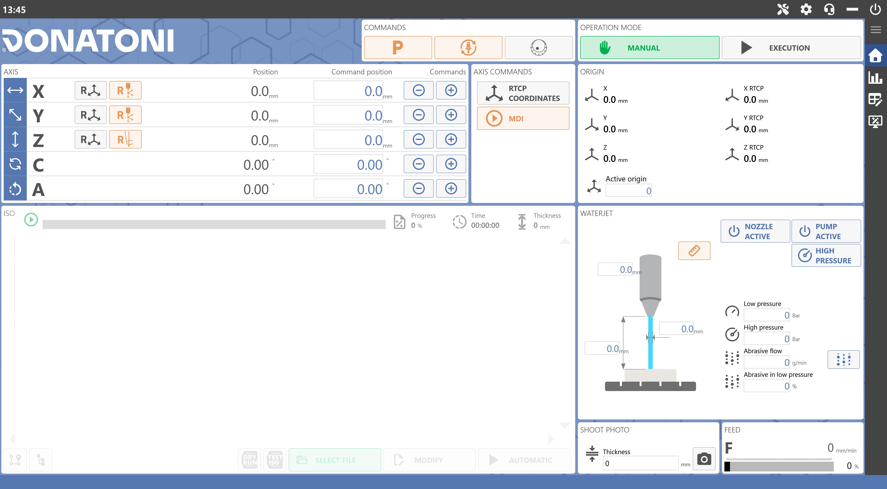
Shiriti i sipërm
Ky shirit ndodhet në pjesën e sipërme të çdo faqeje të aplikacionit.

 | Mirëmbajtjet |
Cilësimet | |
 | Asistenca |
Minimizo | |
Fik / Rinis |
Mirëmbajtjet
Kjo faqe ofron një listë mirëmbajtjesh.
Çdo rresht mbushet gradualisht për të paraqitur ecurinë kohore deri në mirëmbajtjen e ardhshme.
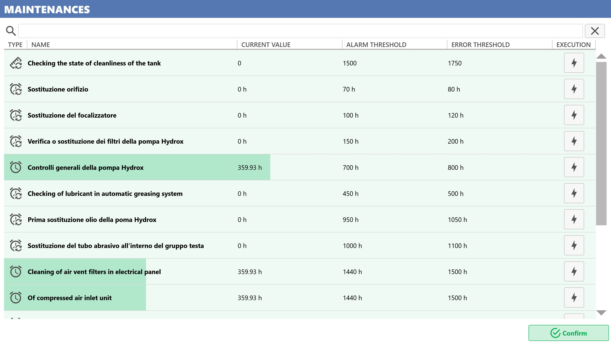
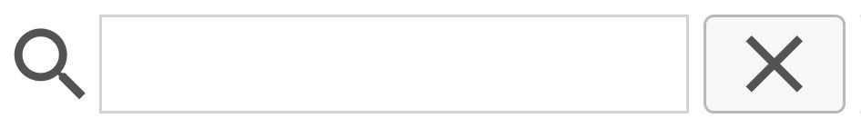 | Filtro sipas emrit |
 | Ekzekutimi |
Kryerja e një mirëmbajtjeje
Kjo dritare përmban informacione dhe lidhje të dobishme për mirëmbajtjen e zgjedhur:
Emri i mirëmbajtjes
Përshkrimi i mirëmbajtjes
Informacione mbi ndërhyrjen e mirëmbajtjes
Lidhje me DSC (Donatoni Share Content)
Faqja DSC hapet drejtpërdrejt në anën e djathtë të dritares.

Cilësimet
Faqja e cilësimeve paraqitet si më poshtë:
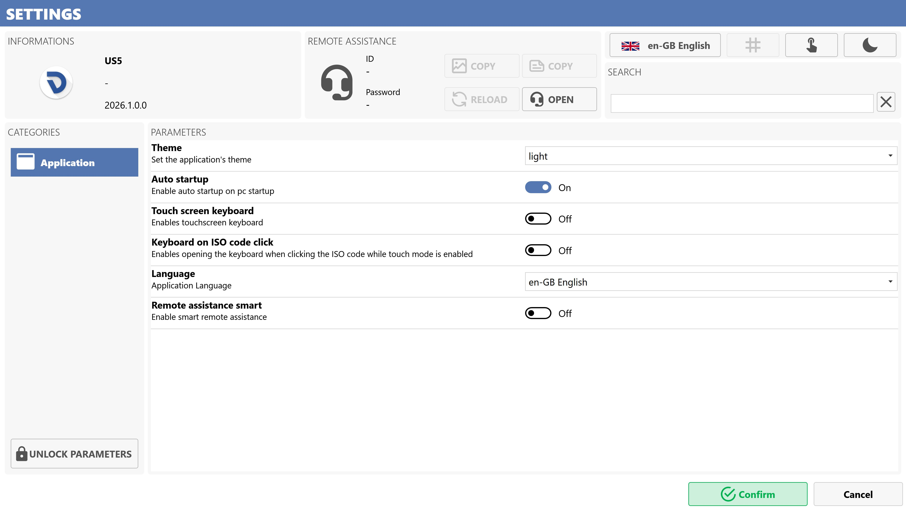
Informacionet
Në pjesën e sipërme majtas të panelit paraqiten informacione të përgjithshme për aplikacionin e instaluar dhe versionin aktual.
Asistenca në distancë
Ky panel, i vendosur në pjesën e sipërme qendrore, i mundëson operatorit të kontaktojë asistencën dhe ofron veprimet e mëposhtme:
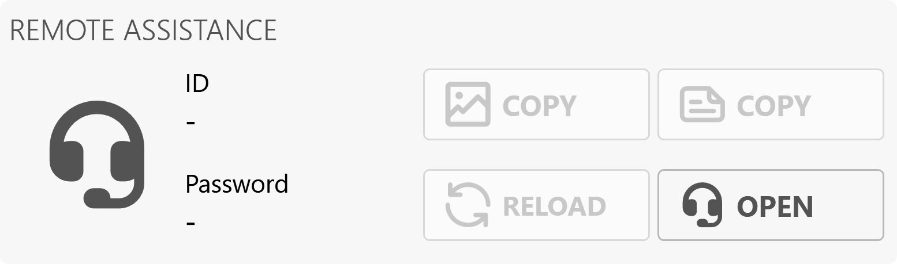
Shiriti i sipërm i cilësimeve
Ky shirit ndodhet në pjesën e sipërme djathtas të panelit.
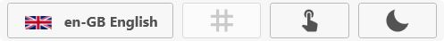
 | Gjuha e vendosur |
 | Menaxhimi i ndërfaqes |
 | Tastierat me ekran me prekje |
 | Tema e aplikacionit |
Kërko
Ky shirit ndodhet menjëherë poshtë shiritit të sipërm, gjithmonë në anën e djathtë të panelit.
Shiriti paraqitet si më poshtë:

Kjo fushë teksti, kur plotësohet siç duhet, mundëson kufizimin e rezultateve të shfaqura në panelin parametrat, duke treguar vetëm ato që përmbajnë tekstin e futur, siç paraqitet në imazhin e mëposhtëm shembull:
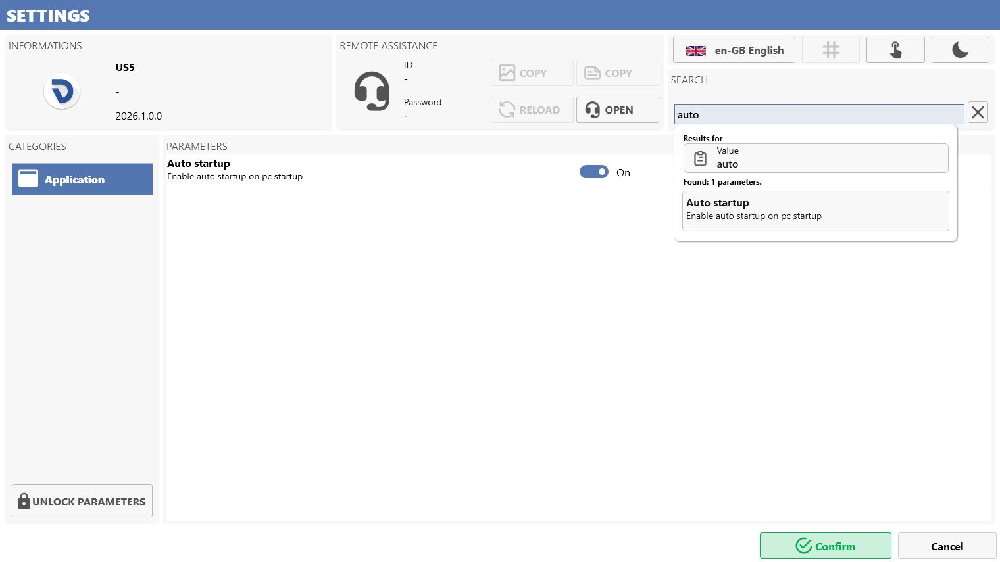
Kategoritë
Ky panel, i vendosur në anën e majtë të ndërfaqes, mundëson zgjedhjen e një makrokategorie cilësimesh dhe hyrjen në kategoritë e përparuara.
Hyrja në kategoritë e përparuara mundësohet vetëm pasi teknikët e autorizuar të Donatoni të kenë futur një fjalëkalim.
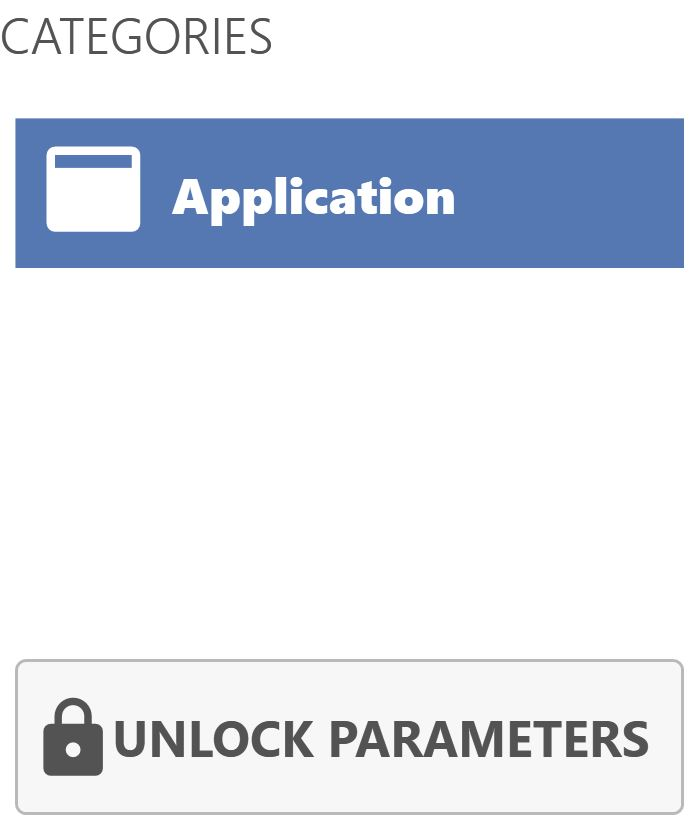
Parametrat
Ky seksion, që zë pjesën qendrore të panelit të parametrave, i mundëson operatorit të ndryshojë parametrat e kategorisë së zgjedhur aktualisht.
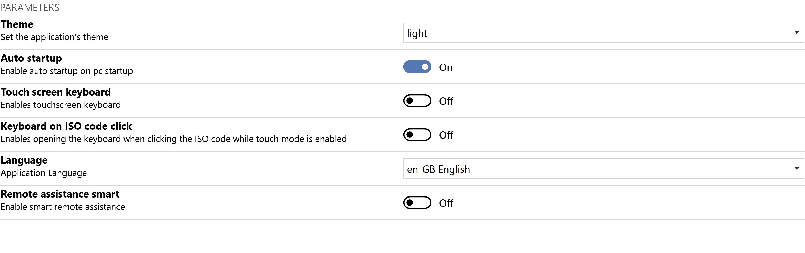
Kategoria Aplikacioni
Tema | Vendos temën e aplikacionit. |
Nisja automatike | Aktivizon nisjen automatike kur ndizet kompjuteri. |
Tastiera në ekran | Aktivizon tastierën në ekran. |
Tastiera kur klikohet kodi ISO | Aktivizon hapjen e tastierës kur klikohet kodi ISO ndërsa modaliteti ‘touch’ është aktiv. |
Gjuha | Gjuha e aplikacionit. |
Asistenca inteligjente në distancë | Aktivizon asistencën inteligjente në distancë. |
Shiriti i poshtëm i cilësimeve
Ky shirit ndodhet në pjesën e poshtme djathtas të faqes.
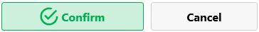
Konfirmo | |
Anulo | Mbyll panelin e cilësimeve duke anuluar çdo ndryshim të kryer nga operatori. |
Asistenca
Shtypja e butonit asistenca hap një panel asistence në distancë të ngjashëm me atë që paraqitet në imazhin e mëposhtëm:
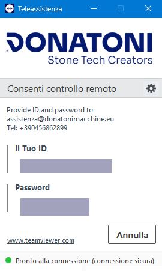
Për të marrë asistencë në distancë drejtpërdrejt në makinë, operatori duhet t’i japë shërbimit të asistencës informacionet e mëposhtme të paraqitura në panel:
ID | Në imazhin shembull, numri menjëherë poshtë zërit: ID-ja juaj. |
Fjalëkalimi | Në imazhin shembull, grupi i karaktereve dhe numrave menjëherë poshtë zërit: Fjalëkalimi. |
Fik / Rinis
Nga ky panel mund të kryhen veprimet e mëposhtme:

Mbyll aplikacionin | |
Rinis aplikacionin | |
Fik sistemin | |
Rinis kompjuterin |
Shiriti anësor
Ky shirit anësor ndodhet në anën e djathtë të të gjitha faqeve të aplikacionit.
 | Dukshmëria e shiritit anësor |
Home | |
 | Statistikat |
Shërbimet | |
CadCam |
Ndërfaqja Home paraqitet si më poshtë:

Komandat
Ky panel ndodhet në pjesën e sipërme qendrore të ndërfaqes.
I mundëson operatorit të kryejë veprimet e mëposhtme:

 | Parkimi automatik |
 | Ndërrimi manual i veglës |
 | Komanda portative |
Modaliteti i punës
Paneli i mëposhtëm ndodhet në pjesën e sipërme djathtas të ndërfaqes dhe i mundëson operatorit zgjedhjen e mëposhtme:

Manual | |
 | Ekzekutim |
Akset
Ky panel ndodhet në pjesën e sipërme majtas të ndërfaqes.
Paneli mund të ketë formë dhe renditje të ndryshme të përmbajtjes në varësi të modalitetit të zgjedhur të punës:
Manual
Me modalitetin e punës Manual , paneli paraqitet si në imazhin e mëposhtëm shembull:

Butonat e akseve
Vetëm në këtë modalitet pune janë të disponueshëm butonat e mëposhtëm:
 | Rivendos aksin |
 | Rivendos origjinat X dhe Y |
 | Rivendos origjinën Z |
 | Zvogëlo kuotën e aksit |
 | Rrit kuotën e aksit |
Ekzekutim
Me modalitetin e punës Ekzekutim , paneli i akseve ndryshon përmasa.
Çdo aks tregon pozicionin aktual dhe paneli paraqitet si në imazhin e mëposhtëm shembull:

DTG | Distance To Go, distanca deri te objektivi. |
FEED | Shpejtësia e lëvizjes e shprehur në mm/minutë. |
A | Amper. |
Komandat e akseve
Ky panel ndodhet menjëherë në të djathtë të panelit Aksetdhe mundëson veprimet e mëposhtme:
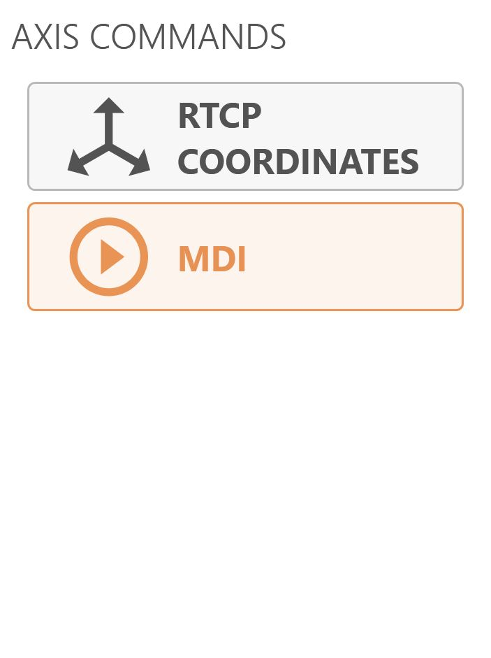
Koordinatat RTCP Procedura e funksionimit:
Lëvizja me komandën RTCP lejohet vetëm kur çelësi i koduar është futur në pozicionin përkatës, i cili gjendet në konsolën e operatorit.
| |
 | MDI / MDI RTCP |
Origjina
Ky panel ndodhet në pjesën e sipërme djathtas të ndërfaqes, menjëherë poshtë panelit Modaliteti i punës.
I mundëson operatorit të shohë origjinat e akseve dhe origjinat RTXP, si dhe të shohë e të ndryshojë origjinën aktive.

ISO
Ky panel shtrihet në pjesën e poshtme majtas të ndërfaqes dhe i mundëson operatorit të menaxhojë skedarët ISO.
Kur ngarkohet një ISO, ndërfaqja merr pamjen e mëposhtme:
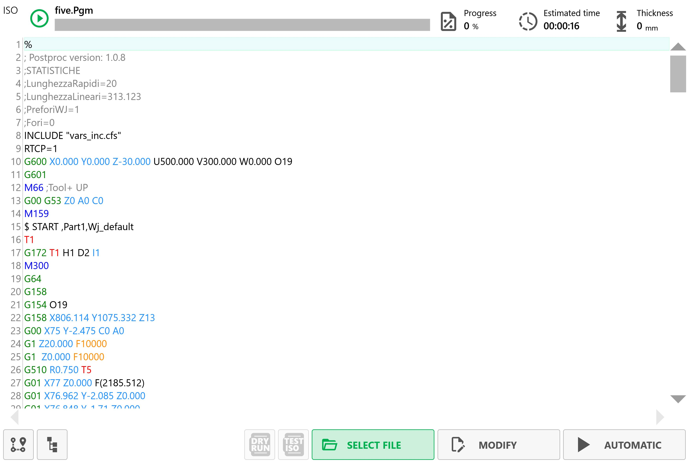
Shiriti i sipërm
Në shiritin e sipërm të panelit shfaqet shiriti i ecurisë së ekzekutimit.
Gjithashtu janë të pranishme informacionet e mëposhtme:
Ecuria | |
 | Koha e parashikuar |
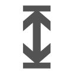 | Trashësia |
Shiriti i poshtëm
Në këtë shirit, të vendosur në pjesën e poshtme të panelit, operatorit i vihen në dispozicion butonat e mëposhtëm:
 | Paraafishimi |
Përpunimet | |
DRY RUN | |
 | Testi ISO |
Zgjidh skedarin | |
 | Ndrysho |
 | Ekzekutimi automatik |
 | Kërkimi i bllokut |
Zgjidh skedarin
Kur hapet paneli Zgjidh skedarin, do të hapet një dritare e ngjashme me këtë:

Dosja e sipërme | |
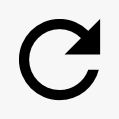 | Ringarko |
Fshi filtrin e tekstit | |
Zbato filtrin | |
 | Shtigjet |
 | Paraafishimi ISO |
 | Përpunimet |
 | Koha e parashikuar |
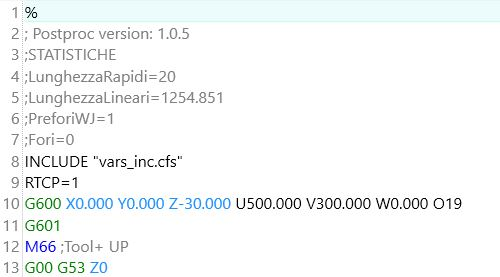 | Paraafishimi i kodit ISO |
Paraafishimi ISO
Paraafishimi ISO tregon paraafishimin e skedarit të zgjedhur dhe i jep operatorit mundësinë të zgjedhë një prerje nga paneli në të djathtë dhe të shohë seksionin përkatës të kodit.
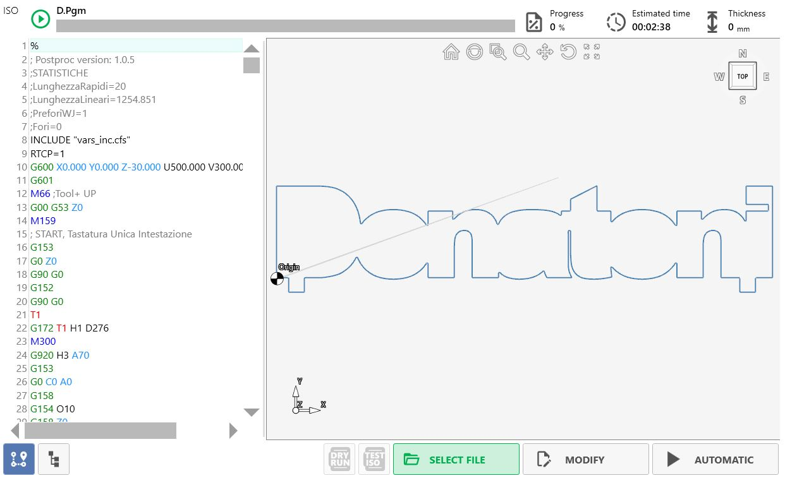
Elementet e paraafishimit ISO
Në paraafishim ndodhen butonat dhe elementet grafike të mëposhtme:
 | Home |
Lupa | |
Dritarja e zmadhimit | |
Zmadhimi | |
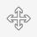 | Zhvendos |
Rrotullo | |
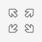 | Zmadhimi për përshtatje |
 | Kubi i orientimit |
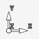 | Treguesi i akseve XYZ |
Përpunimet
Shfaqen përpunimet që përbëjnë skedarin ISO të zgjedhur.
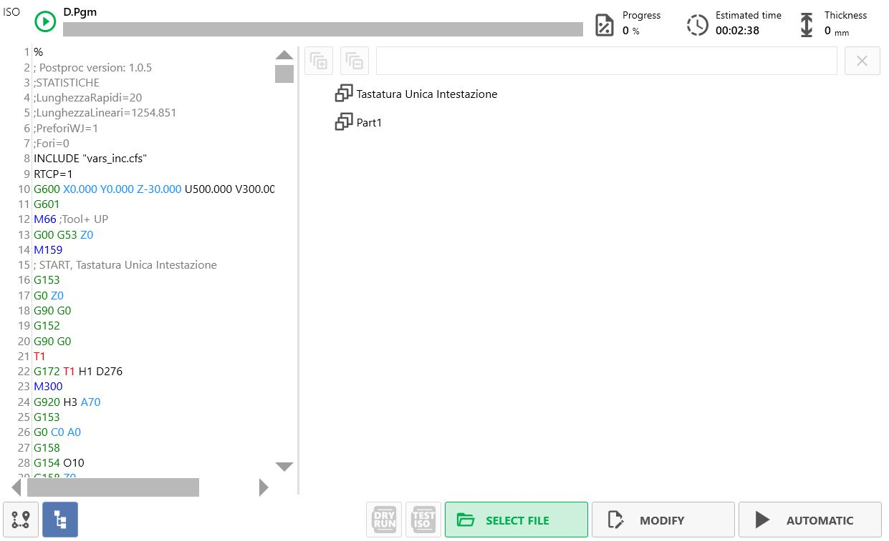
Ndryshimi i përpunimeve
Duke zgjedhur butonin e ndryshimit në pjesën e poshtme të panelit, mund të aktivizohen dhe çaktivizohen përpunimet individuale të skedarit të zgjedhur.
Zgjedhja e një përpunimi do ta kthejë në koment pjesën përkatëse të kodit në skedar, siç paraqitet në anën e majtë të imazhit të mëposhtëm shembull:

Waterjet
Ky panel ndodhet në pjesën qendrore djathtas të aplikacionit dhe i ofron operatorit mundësitë e mëposhtme:
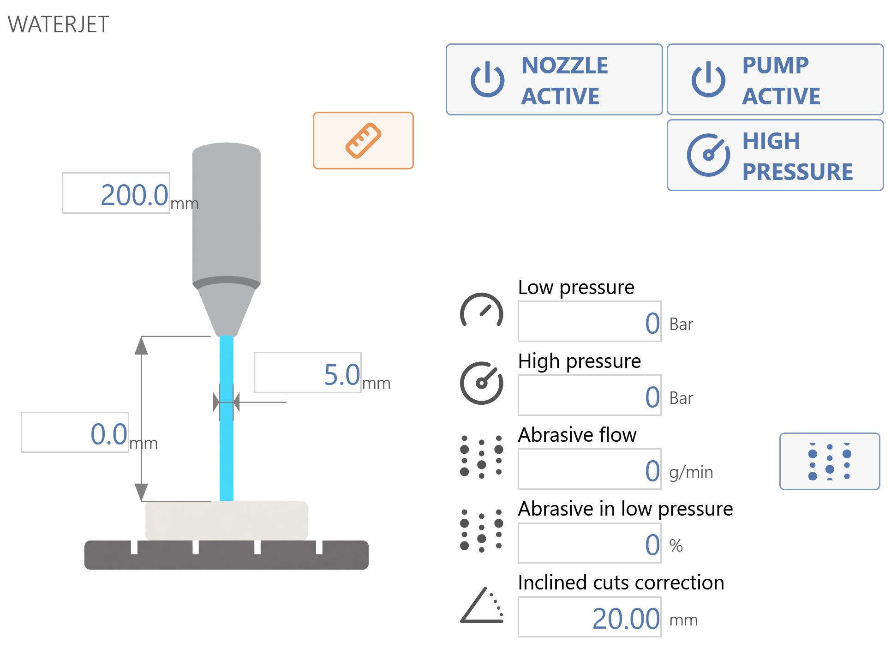
Butonat Waterjet
 | Mat veglën |
 | Rryma aktive |
| Pompa aktive |
Presioni i lartë | |
 | Abrazivi aktiv |
Parametrat Waterjet
 | Presioni i ulët |
 | Presioni i lartë |
 | Prurja e abrazivit |
| Abrazivi në LP |
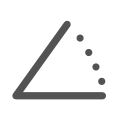 | Korrigjimi i prerjeve të pjerrëta |
Shkrepja e fotos
Ky panel ndodhet në pjesën e poshtme të ndërfaqes.
Në përgjithësi, ky funksion mundëson shkrepjen e një fotografie të tavolinës së punës së makinës duke përdorur pajisjen fotografike të integruar.
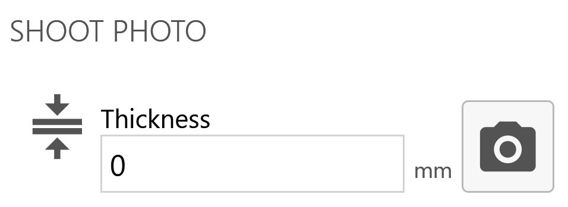
 | Trashësia |
 | Shkrep foto |
Paneli i shkrepjes së fotos
Duke shtypur këtë ikonë, shkrepet një foto dhe hapet faqja e imazhit të marrë.
Nga kjo faqe, fotografia mund të hidhet poshtë ose të ruhet duke përcaktuar shtegun e ruajtjes dhe trashësinë e dëshiruar.
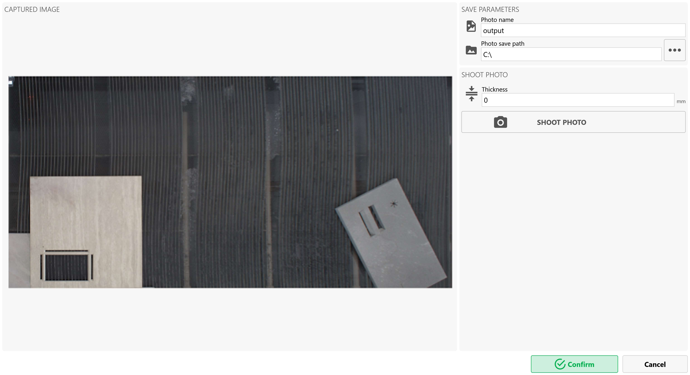
Parametrat e ruajtjes
Emri i fotos | |
 | Shtegu i ruajtjes së fotos |
Zgjidh shtegun e fotos |
Shkrep foto
| Trashësia |
| Shkrep foto |
Feed
Ky panel ndodhet në pjesën e poshtme djathtas të ndërfaqes dhe mundëson shfaqjen e vlerës Feed, e cila përfaqëson zhvendosjen e interpoluar të makinës.

Kur tool plus është i aktivizuar, ndërfaqja e faqes home ndryshon pamje:
/0_d-20261104-081953.png)
Tool plus
Ky panel ndodhet në pjesën e sipërme djathtas të ndërfaqes dhe mundëson menaxhimin e Tool Plus:
/4_b-20261104-082111.png)
Parametrat e Tool Plus
/3.3_b-20261023-053843.png) | Gjatësia |
/3.4_b-20261023-053756.png) | Diametri |
/3.5_b-20261023-053926.png) | RPM |
Pragu i alarmit | |
Konsumi |
Butonat e Tool Plus
/7.3_b.png) | Mat veglën me sondë |
Ngritja | |
Ulja | |
Ndezja/Fikja e ujit | |
/3.12.png) | Aktivizo/Çaktivizo rrotullimin |
Kur tool plus dhe Hydrofinish janë të aktivizuar, ndërfaqja e faqes home merr pamjen e mëposhtme:
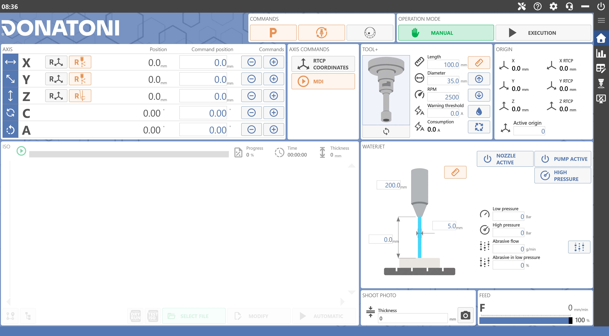
Tool plus
Paneli tool plus tani është më i gjerë dhe përmban një paraqitje të veglës tool plus:
/4-20261104-073702.png)
Butonat e tool plus
Elemente të reja shfaqen në anën e majtë të këtij paneli:
Ndrysho modalitetin |
Modaliteti tool plus
Janë të disponueshme modalitetet e mëposhtme:
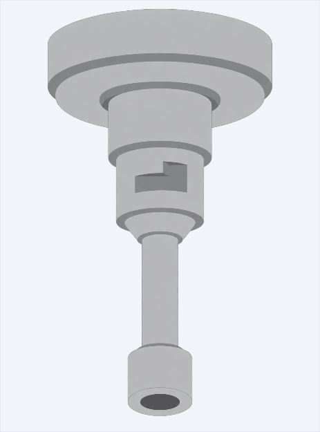 | Freza |
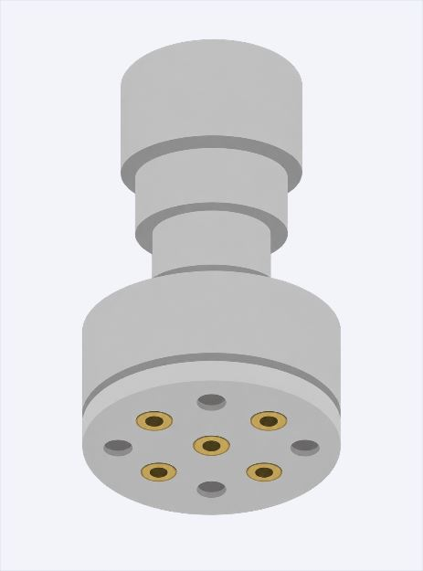 | Hydrofinish |
Nëpërmjet kësaj dritareje mund të shfaqen statistikat e përpunimeve të kryera nga makina.
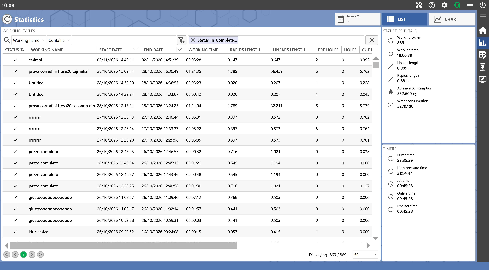
Shiriti i sipërm
Përditëso statistikat | |
 | Filtri i datave |
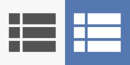 | Lista |
Grafiku |
Filtri i datës
Ky filtër mundëson kufizimin kohor të mbledhjes së statistikave.
Pasi të klikohet butoni për filtrimin e datave, hapet paneli i mëposhtëm, i cili mundëson ndryshimin e datës së fillimit, datës së përfundimit ose vendosjen e njërit prej filtrave kohorë që ndodhen në anën e majtë të panelit:

Statistikat në listë
Pamja në listë i mundëson operatorit të renditë dhe filtrojë statistikat nëpërmjet fushave të disponueshme, të paraqitura në imazhin e mëposhtëm shembull:
Shiriti i poshtëm i statistikave në listë
 | Zgjedhësi i faqes
|
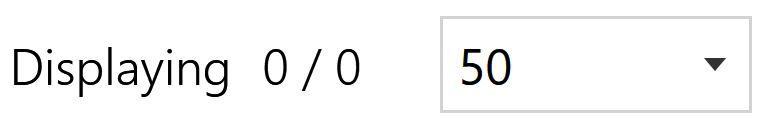 | Rezultatet e shfaqura |
Statistikat në grafik
Pamja grafike i mundëson operatorit të shohë statistikat e renditura sipas kohës dhe të kufizuara në kategorinë e zgjedhur aktualisht.

Kategoritë
Më poshtë paraqiten kategoritë standarde të disponueshme në statistikat grafike:
 | Ciklet gjithsej |
Gjatësitë lineare | |
 | Koha e punës |
Gjatësitë e lëvizjeve të shpejta | |
Abrazivi i konsumuar | |
 | Uji i konsumuar |
Totalet e statistikave
Ky panel ndodhet në pjesën e sipërme djathtas të ndërfaqes dhe i vë operatorit në dispozicion vlerat totale të statistikave sipas kategorisë.
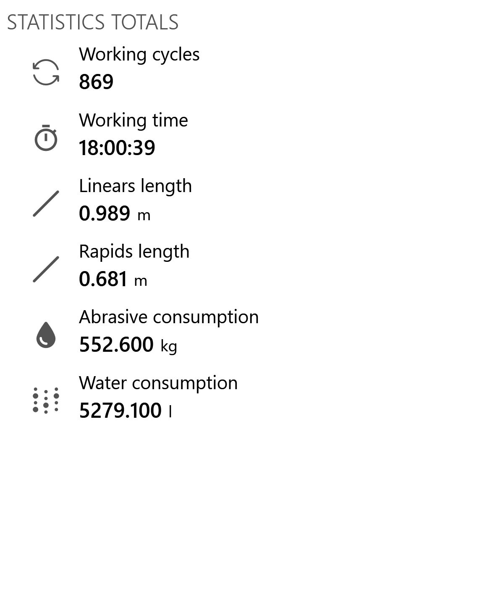
Kohëmatësit
Ky panel ndodhet në pjesën e poshtme djathtas të ndërfaqes dhe i vë operatorit në dispozicion përmbledhjen e disa kohëzgjatjeve:
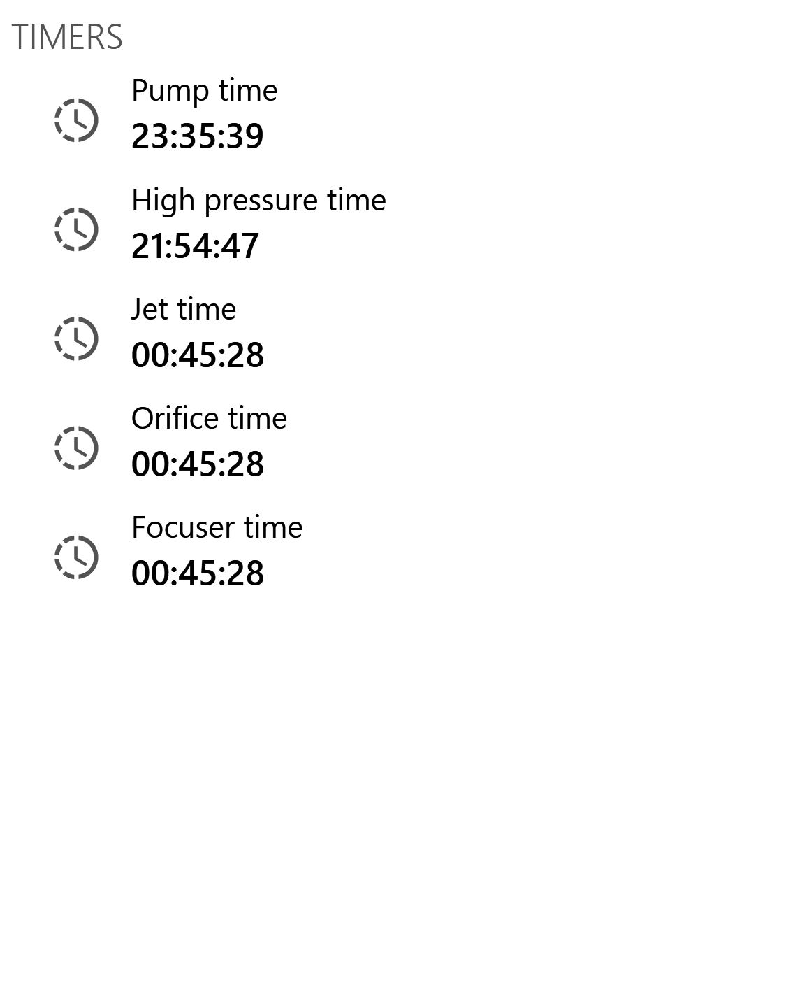
Në këtë faqe mund të hapen alarmet dhe mirëmbajtjet:

Shërbimet
Alarmet | |
 | Mirëmbajtjet |
Faqja e alarmeve
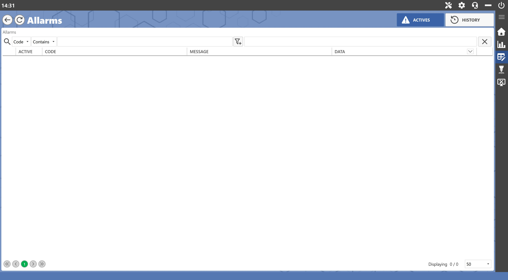
Shiriti i sipërm
 | Prapa |
 | Përditëso |
Aktive | |
Historiku |
Shembull i një alarmi aktiv
Imazhi i mëposhtëm tregon një shembull alarmi aktiv, ku ngjyra e sfondit të aplikacionit bëhet e kuqe:

Shembull historiku
Imazhi i mëposhtëm tregon një shembull historiku:

Butonat
Filtri i datave në historik
Filtri i datave |
Operatori mund të zgjedhë të shohë mesazhet e ditës, javës, muajit, vitit ose të një intervali të personalizuar.

DSC (Donatoni Share Content)
Alarmet DSC |
Faqja e mirëmbajtjeve

Shiriti i sipërm
 | Prapa |
 | Përditëso |
 | Mirëmbajtjet |
 | Ekzekutimet |
Mirëmbajtjet
Hap DSC |
Ekzekutimet
 | Filtri i datave |
Operatori mund të zgjedhë të shohë mirëmbajtjet e ditës, javës, muajit, vitit ose të një intervali të personalizuar.

Kjo ndërfaqe mund të hapet duke shtypur butonin e mëposhtëm në menynë anësore të djathtë:
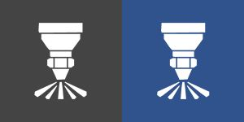 | Hydrofinish |
Imazhi i mëposhtëm tregon një shembull të ndërfaqes Hydrofinish:
/0.0.png)
Komandat
Ky panel ndodhet në pjesën e sipërme qendrore të ndërfaqes.
I mundëson operatorit të kryejë veprimet e mëposhtme:
/1.0.png)
Parkimi automatik | |
/1.2.png) | Ndërrimi manual i veglës |
/1.3.png) | Komanda portative |
Akset
Ky panel ndodhet në pjesën e sipërme majtas të ndërfaqes.
/2.0-20261022-094915.png)
Butonat e akseve
Vetëm në këtë modalitet pune janë të disponueshëm butonat e mëposhtëm:
/3.6.png) | Rivendos aksin |
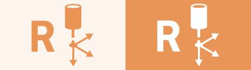 | Rivendos origjinat X dhe Y |
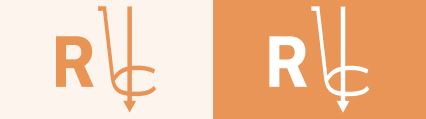 | Rivendos origjinën Z |
Tool plus
Ky panel ndodhet në pjesën e sipërme djathtas të ndërfaqes dhe mundëson menaxhimin e Tool Plus:
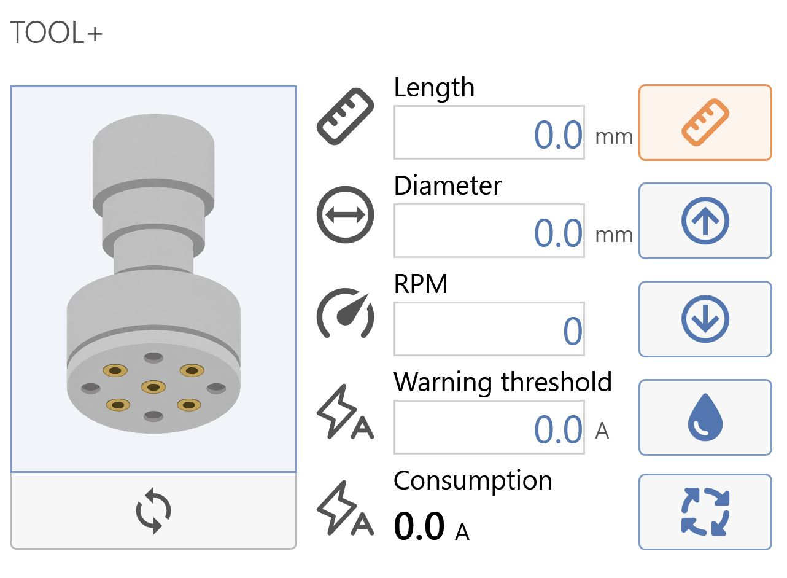
Parametrat e Tool Plus
Gjatësia | |
/3.4_b-20261023-053756.png) | Diametri |
/3.5_b-20261023-053926.png) | RPM |
/3.6_b-20261023-054008.png) | Pragu i alarmit |
| Konsumi |
Butonat e Tool Plus
/PART_InnerGrid_System.Windows.Controls.Grid_28831760-20261023-140317.png) | Ndrysho modalitetin |
/7.3_b.png) | Mat veglën me sondë |
/3.9.png) | Ngritja |
/3.10.png) | Ulja |
/3.11.png) | Ndezja/Fikja e ujit |
/3.12.png) | Aktivizo/Çaktivizo rrotullimin |
Origjina
Ky panel ndodhet në pjesën e sipërme djathtas të ndërfaqes, poshtë shiritit të sipërm:
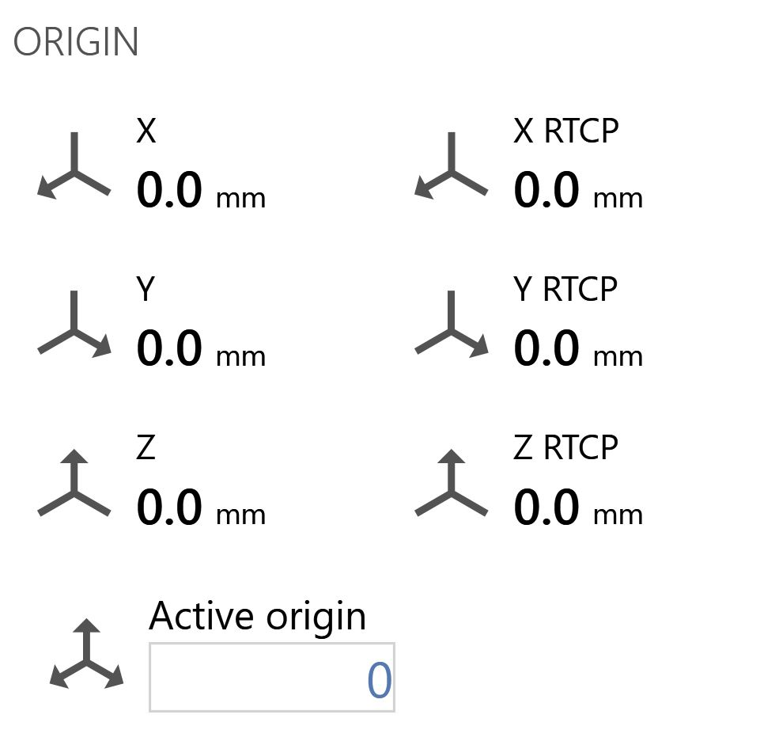
Hydrofinish
Ky seksion ndodhet në pjesën e poshtme majtas të ndërfaqes dhe mundëson menaxhimin e parametrave të përpunimit Hydrofinish:
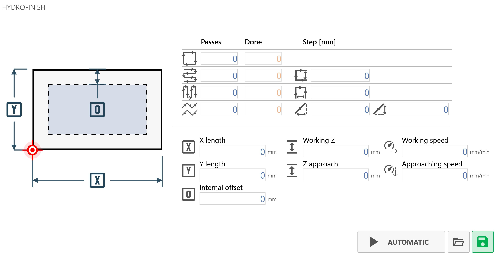
Lloji i kalimeve Hydrofinish
Gjysma e sipërme e këtij paneli përmban parametrat e mëposhtëm që lidhen me kalimet:
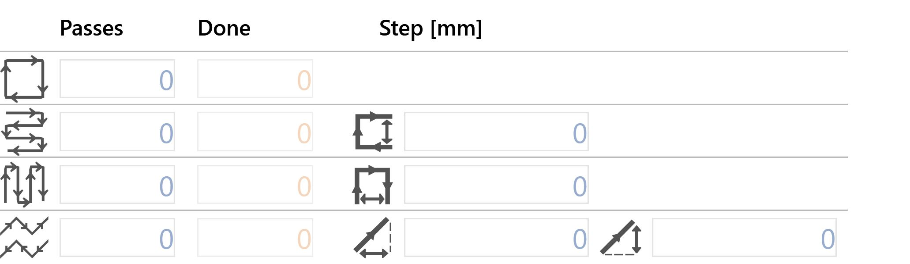
/5.2.1.png) | Konturi |
/5.2.2.png) | Kalimet horizontale |
/5.2.3.png) | Kalimet vertikale |
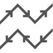 | Kalimet zigzag |
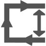 | Hapi nga e majta në të djathtë |
/5.2.6.png) | Hapi nga lart poshtë |
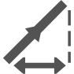 | Hapi Zigzag X |
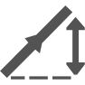 | Hapi Zigzag Y |
Parametrat Hydrofinish
Gjysma e poshtme e këtij paneli përmban parametrat e mëposhtëm që lidhen me kalimet:
/5.3.0.png)
Përmasa horizontale | |
Përmasa vertikale | |
Ofseti i brendshëm | |
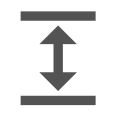 | Z e përpunimit |
Z e afrimit | |
/5.3.2.3_b-20261023-055746.png) | Shpejtësia e punës |
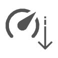 | Shpejtësia e afrimit |
Shiriti i poshtëm Hydrofinish
/1-20261102-144618.png)
Automatik | |
Ngarko recetën | |
Ruaj recetën |
Ngarko recetën
Paneli për ngarkimin e një recete paraqitet fillimisht si më poshtë:
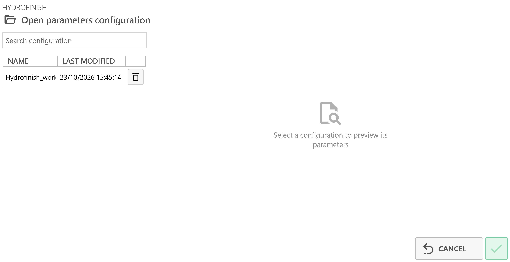
Pas zgjedhjes së një recete, shfaqet paraafishimi i vlerave:
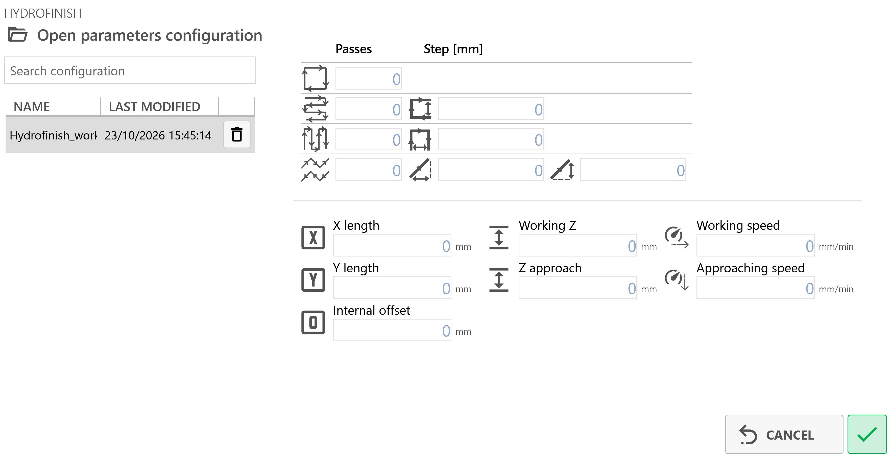
/5.5.3.1-20261023-135238.png) | Anulo |
/5.5.3.2-20261023-135146.png) | Konfirmo |
Waterjet
Ky panel ndodhet në pjesën qendrore djathtas të aplikacionit dhe i ofron operatorit mundësitë e mëposhtme:
/6.0.png)
Butonat e Tool plus
/7.3_b-20261102-141203.png) | Mat veglën |
/7.1-20261026-101827.png) | Rryma aktive |
| Pompa aktive |
/7.2-20261102-140634.png) | Presioni i lartë |
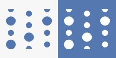 | Abrazivi aktiv |
Parametrat e Tool plus
/7.4_b-20261030-142933.png) | Presioni i ulët |
/7.5_b-20261030-143036.png) | Presioni i lartë |
Prurja e abrazivit | |
Abrazivi në LP |
Feed
Ky panel ndodhet në pjesën e poshtme djathtas të ndërfaqes dhe mundëson shfaqjen e vlerës Feed, e cila përfaqëson zhvendosjen e interpoluar të makinës.
Kur hapet aplikacioni, do të niset aplikacioni EasyStone për programim.

Krijimi i trajektoreve dhe Nesting
Softueri mundëson krijimin manual të trajektoreve dhe nesting-ut, të cilat më pas përdoren për zbatimin e përpunimeve. Gjithashtu, trajektoret mund të importohen drejtpërdrejt nga skedarët e vizatimit.

Zbatimi i kompleteve të përpunimit
Nga trajektoret e vizatuara mund të përcaktohen materiali dhe trashësia e punës dhe të zbatohen kompletet e përpunimit.